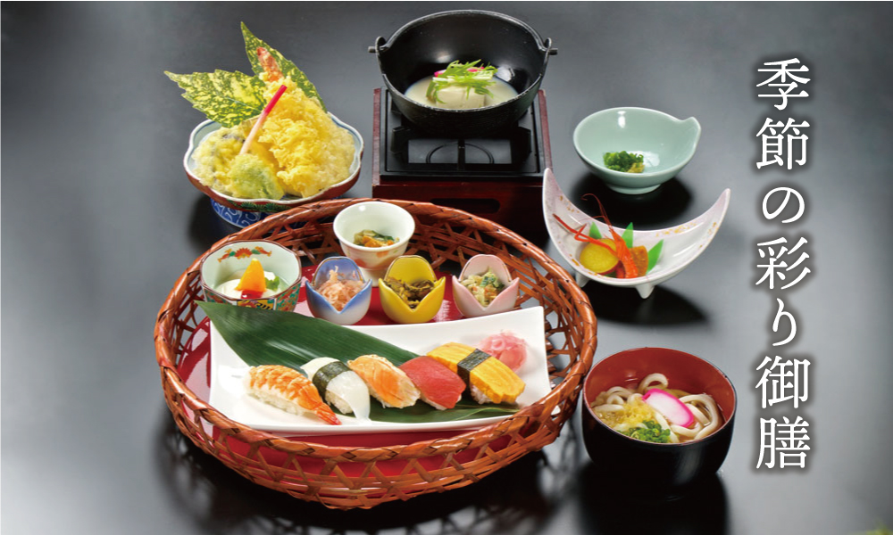
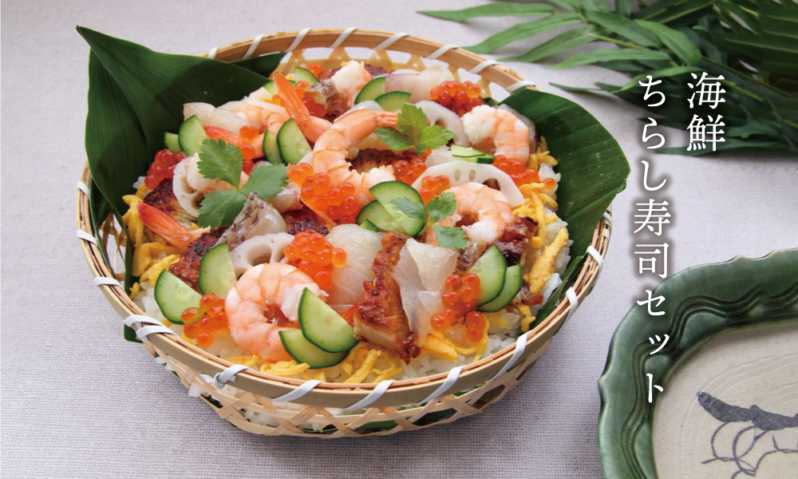
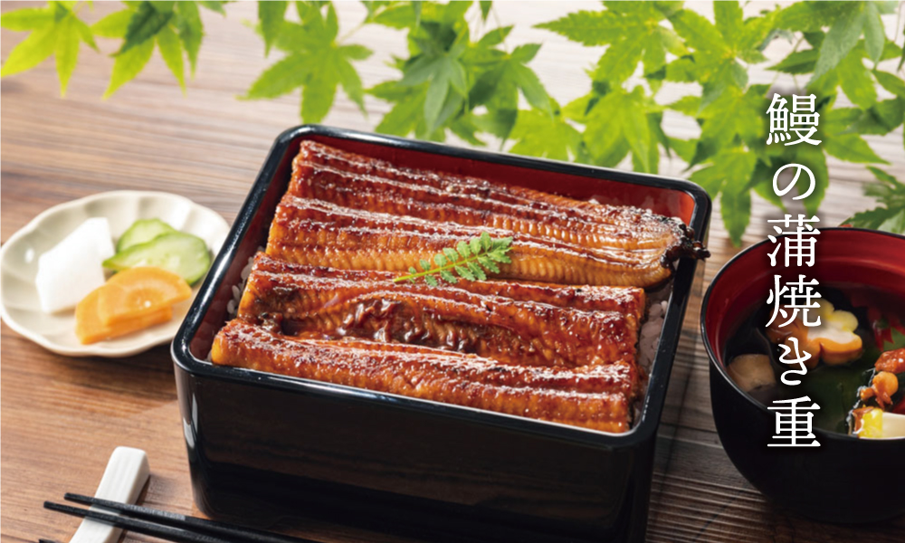
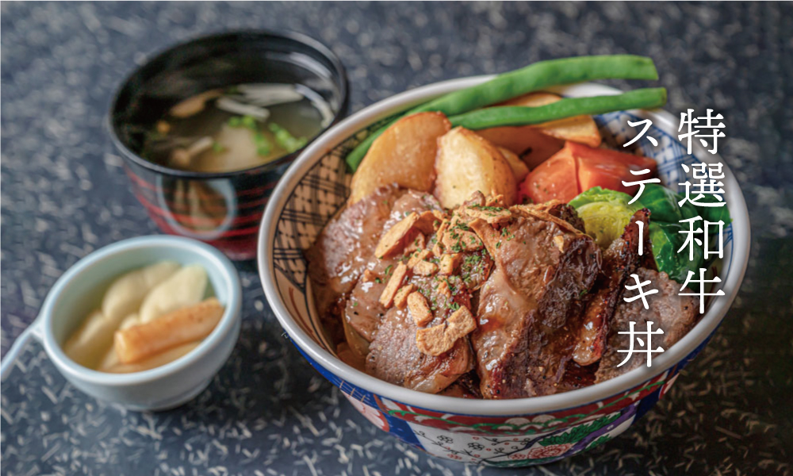

昼の部
ランチ
当店では、四季折々の新鮮な食材を使い、心を込めてご用意したランチメニューをご提供しております。
どうぞ、和の風情とともに、至福のランチタイムをお過ごしください。
- 
- 
- 
- 
-
◼︎飲み物セット
各ランチに＋300円で、ソフトドリンクやお茶、コーヒーをお選びいただけます。
-
◼︎デザートセット
ランチメニューに＋500円で、季節の和菓子やフルーツを使ったデザートを追加できます。
-
◼︎アレルギー対応
食材のアレルギーがある場合は、事前にお知らせいただければ対応いたします。
-
◼︎予約特典
事前にご予約いただいたお客様には、ランチメニューにミニデザートをサービスいたします。
季節の雅コース
「季節の雅コース」は、四季折々の旬の食材をふんだんに使用した贅沢なランチコースです。
前菜からデザートまで、一品一品に季節の彩りと味わいを感じていただける内容となっております。
| 前菜 | 季節の小鉢三種盛り |
| お造り | 新鮮な魚介のお造り三種盛り |
| 煮物 | 季節の野菜と鯛の煮物 |
| 焼き物 | 銀鱈の西京焼き |
| 揚げ物 | 天麩羅盛り合わせ |
| 食事 | 釜炊きご飯、赤出汁、香の物 |
| デザート | 季節の果物と抹茶アイスクリーム |
-
◼︎飲み物
コース＋300円で、ソフトドリンクやお茶、コーヒーをお選びいただけます。
-
◼︎アレルギー対応
食材のアレルギーがある場合は、事前にお知らせいただければ対応いたします。
-
◼︎予約特典
事前にご予約いただいたお客様には、特製の和菓子をサービスいたします。